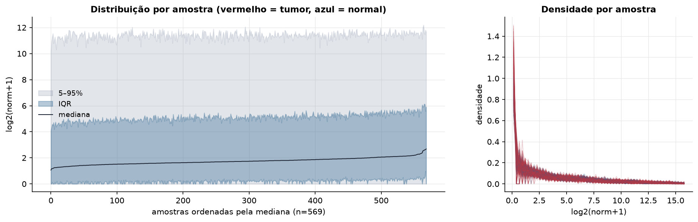
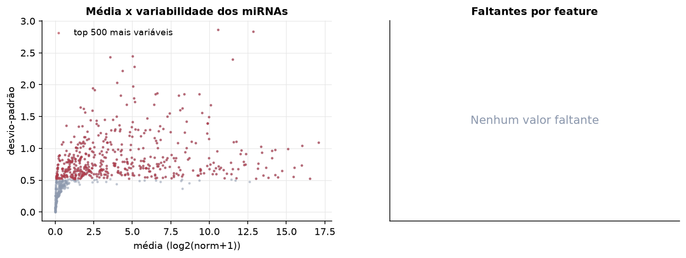
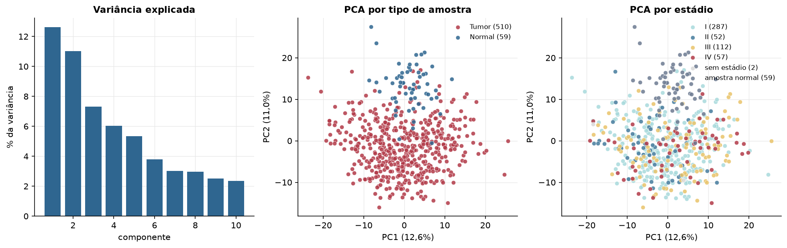
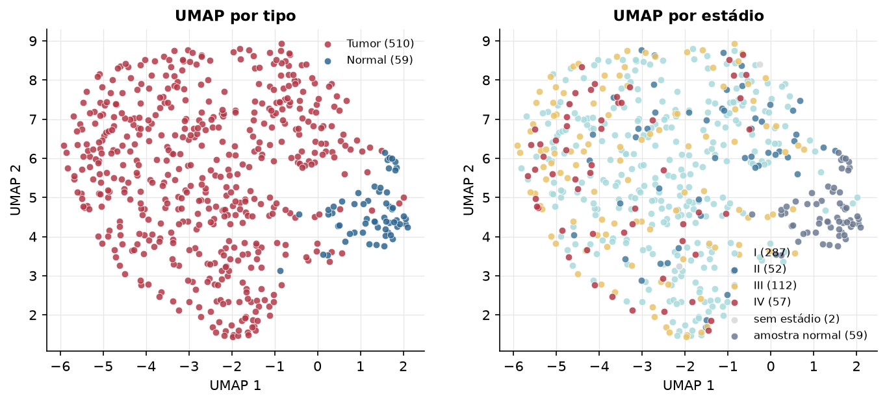
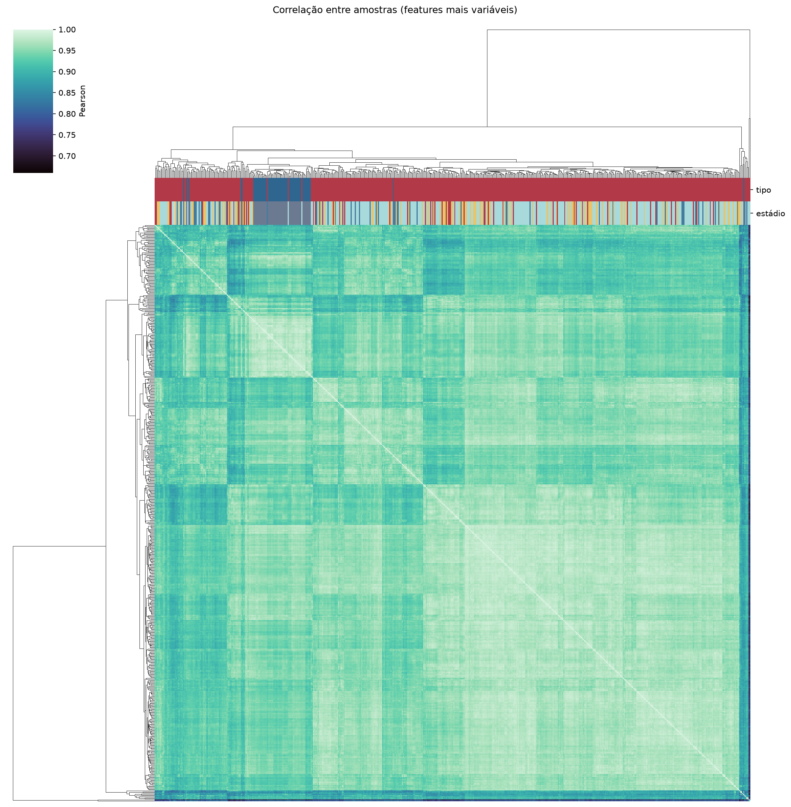
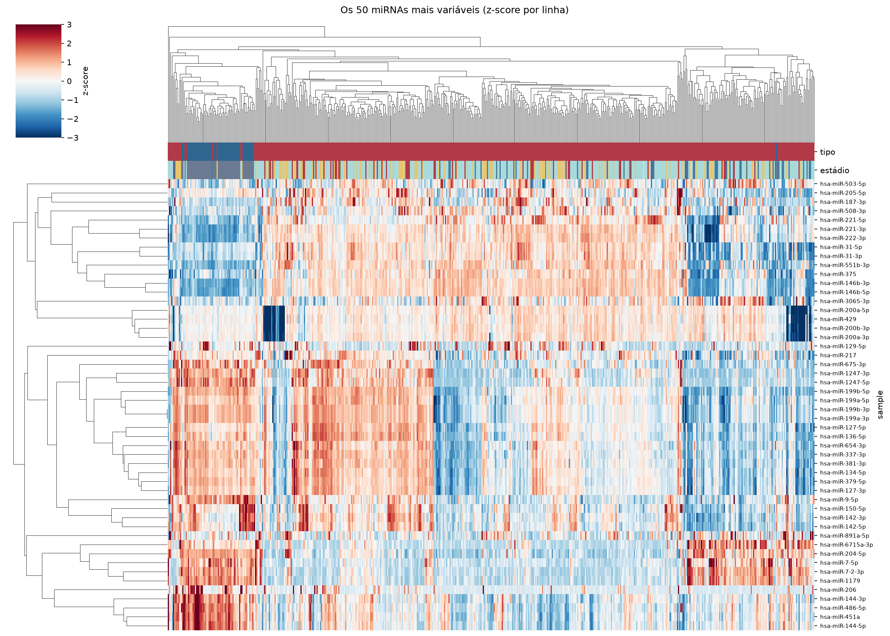
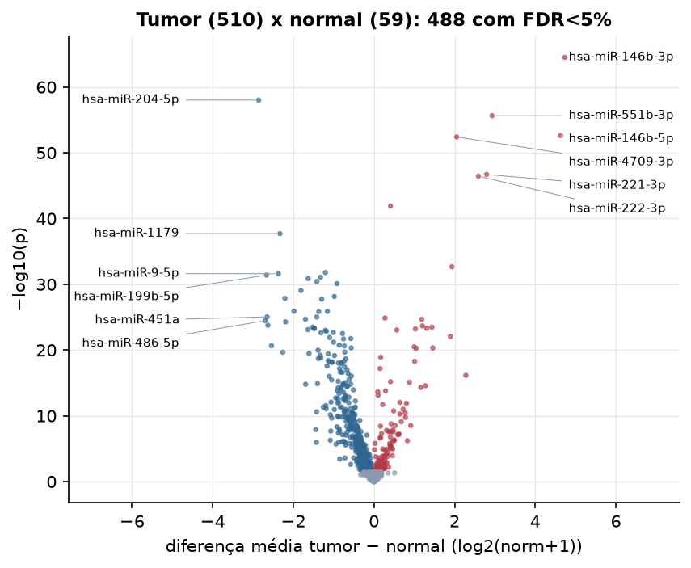
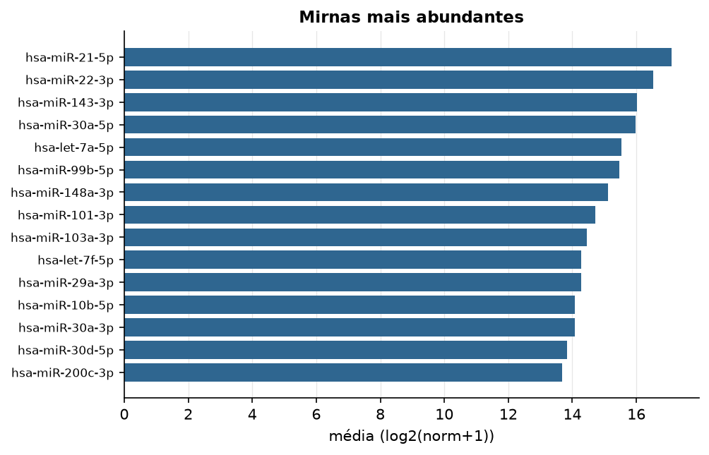

THCA · miRNA-seq (PanCanAtlas)
miRNA maduro, normalizado e corrigido por lote (EB), log2(x+1) · gerado em 22/10/2026 05:10
743miRNAs
510amostras tumorais
59amostras normais
0,0%valores faltantes
Fonte: PanCanAtlas (pancanMiRs_EBadjOnProtocolPlatformWithoutRepsWithUnCorrectMiRs_08_04_16.xena)
Fita madura (5p/3p) já normalizada. As contagens brutas por precursor estão no relatório de contagens.
Principais resultados
- 743 miRNAs medidos em 569 amostras (510 tumorais e 59 normais); 0,0% dos valores estão faltando.
- Os dois primeiros componentes principais explicam 12,6% e 11,0% da variância das features mais variáveis.
- Correlação mediana entre amostras: 0,95.
- Amostras com correlação muito abaixo das demais (possíveis outliers técnicos): TCGA-BJ-A291-01, TCGA-ET-A3BV-01, TCGA-H2-A2K9-01, TCGA-EL-A3GO-01, TCGA-EL-A3GZ-11, TCGA-FK-A3SD-01, TCGA-EM-A2CO-01, TCGA-EM-A3FQ-01, TCGA-EL-A3GV-01.
- Tumor x normal: 488 miRNAs diferentes com FDR < 5% (125 maiores no tumor, 363 maiores no normal; 59 pacientes têm o par tumor-normal).
- Mais aumentados no tumor: hsa-miR-146b-3p, hsa-miR-551b-3p, hsa-miR-146b-5p, hsa-miR-4709-3p, hsa-miR-221-3p, hsa-miR-222-3p, hsa-miR-934, hsa-miR-34a-5p.
- Mais reduzidos no tumor: hsa-miR-204-5p, hsa-miR-1179, hsa-miR-152-3p, hsa-miR-9-5p, hsa-miR-199b-5p, hsa-miR-3074-5p, hsa-miR-138-1-3p, hsa-miR-195-5p.
- Associações clínicas com p < 0,05 nos componentes principais: PC1 com estádio (p=8.5e-06); PC3 com estádio (p=5.1e-06).
Distribuição dos valores


Estrutura das amostras




Tumor x normal

Features mais diferentes entre tumor e normal
| sample | diferenca_tumor_menos_normal | t | p | fdr |
|---|---|---|---|---|
| hsa-miR-146b-3p | 4.733 | 27.476 | 3.12e-65 | 2.31e-62 |
| hsa-miR-204-5p | -2.86 | -22.022 | 9.73e-59 | 3.6e-56 |
| hsa-miR-551b-3p | 2.929 | 23.32 | 2.32e-56 | 5.71e-54 |
| hsa-miR-146b-5p | 4.627 | 24.826 | 2.4e-53 | 4.44e-51 |
| hsa-miR-4709-3p | 2.051 | 27.111 | 3.87e-53 | 5.73e-51 |
| hsa-miR-221-3p | 2.793 | 23.625 | 1.98e-47 | 2.43e-45 |
| hsa-miR-222-3p | 2.591 | 23.15 | 3.6e-47 | 3.8e-45 |
| hsa-miR-934 | 0.41 | 14.937 | 1.26e-42 | 1.16e-40 |
| hsa-miR-1179 | -2.332 | -19.647 | 1.95e-38 | 1.6e-36 |
| hsa-miR-34a-5p | 1.933 | 20.391 | 2.15e-33 | 1.59e-31 |
| hsa-miR-152-3p | -1.204 | -16.594 | 1.62e-32 | 1.09e-30 |
| hsa-miR-9-5p | -2.369 | -18.317 | 2.45e-32 | 1.51e-30 |
| hsa-miR-199b-5p | -2.666 | -15.821 | 3.96e-32 | 2.25e-30 |
| hsa-miR-3074-5p | -1.327 | -16.974 | 8.45e-32 | 4.46e-30 |
| hsa-miR-138-1-3p | -1.632 | -17.464 | 1.31e-31 | 6.48e-30 |
| hsa-miR-195-5p | -1.417 | -17.07 | 3.72e-31 | 1.72e-29 |
| hsa-miR-28-3p | -0.918 | -17.367 | 7.85e-31 | 3.41e-29 |
| hsa-miR-379-5p | -1.809 | -14.089 | 8.76e-30 | 3.6e-28 |
| hsa-miR-28-5p | -0.984 | -17.629 | 7.15e-29 | 2.78e-27 |
| hsa-miR-7-2-3p | -2.208 | -15.775 | 1.38e-28 | 5.09e-27 |
| hsa-miR-153-5p | -1.296 | -15.549 | 1.8e-28 | 6.32e-27 |
| hsa-miR-1247-5p | -1.985 | -15.501 | 1.27e-26 | 4.27e-25 |
| hsa-miR-100-5p | -1.155 | -14.561 | 1.34e-26 | 4.31e-25 |
| hsa-miR-337-3p | -1.368 | -13.48 | 1.47e-26 | 4.53e-25 |
| hsa-miR-451a | -2.65 | -15.835 | 8.97e-26 | 2.65e-24 |
| hsa-miR-652-3p | -1.42 | -15.691 | 9.43e-26 | 2.68e-24 |
| hsa-miR-513c-5p | 0.274 | 11.402 | 1.33e-25 | 3.64e-24 |
| hsa-miR-138-5p | -1.699 | -14.431 | 2.02e-25 | 5.27e-24 |
| hsa-miR-181a-2-3p | 1.186 | 14.387 | 2.07e-25 | 5.27e-24 |
| hsa-miR-486-5p | -2.699 | -15.659 | 3.35e-25 | 8.26e-24 |
Associação com variáveis clínicas
p-valores da associação dos três primeiros componentes principais (só tumores) com estádio (Kruskal-Wallis), sexo (Mann-Whitney), idade (Spearman) e sobrevida global (Cox univariado).
| estádio (Kruskal) | sexo (Mann-Whitney) | idade (Spearman) | sobrevida OS (Cox) | |
|---|---|---|---|---|
| PC1 (13,7%) | 8.5e-06 | 0.854 | 0.457 | 0.103 |
| PC2 (8,7%) | 0.06 | 0.249 | 0.146 | 0.135 |
| PC3 (7,2%) | 5.12e-06 | 0.632 | 0.998 | 0.103 |
Mais abundantes
